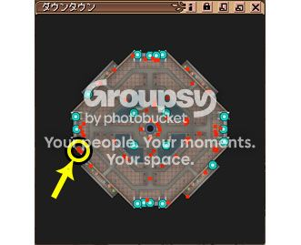

อัลม่า 2 ตัวนี้น่าเลี้ยงมากมาย ยิ่งกว่าปุรุรุอีก
ติดที๋ตอนนี้แกลบอยู่

 โดย NekoChocola » อาทิตย์ 30 ธ.ค. 2012 6:47 am
โดย NekoChocola » อาทิตย์ 30 ธ.ค. 2012 6:47 am


 โดย wind7 » อังคาร 01 ม.ค. 2013 1:14 pm
โดย wind7 » อังคาร 01 ม.ค. 2013 1:14 pm

 โดย NETIX » อังคาร 01 ม.ค. 2013 9:37 pm
โดย NETIX » อังคาร 01 ม.ค. 2013 9:37 pm


 โดย NETIX » อังคาร 08 ม.ค. 2013 2:02 pm
โดย NETIX » อังคาร 08 ม.ค. 2013 2:02 pm

 โดย NETIX » พฤหัสฯ. 24 ม.ค. 2013 1:50 pm
โดย NETIX » พฤหัสฯ. 24 ม.ค. 2013 1:50 pm
 โดย homin » พฤหัสฯ. 24 ม.ค. 2013 2:02 pm
โดย homin » พฤหัสฯ. 24 ม.ค. 2013 2:02 pm

 โดย NETIX » ศุกร์ 25 ม.ค. 2013 5:39 am
โดย NETIX » ศุกร์ 25 ม.ค. 2013 5:39 am


 โดย NETIX » ศุกร์ 25 ม.ค. 2013 10:33 am
โดย NETIX » ศุกร์ 25 ม.ค. 2013 10:33 am
homin เขียน:あれ。。。？
ได้ฟรีเลยเหรอครับ

 โดย Avatar » ศุกร์ 25 ม.ค. 2013 1:47 pm
โดย Avatar » ศุกร์ 25 ม.ค. 2013 1:47 pm

 โดย NETIX » ศุกร์ 25 ม.ค. 2013 3:11 pm
โดย NETIX » ศุกร์ 25 ม.ค. 2013 3:11 pm




 โดย homin » เสาร์ 26 ม.ค. 2013 12:33 pm
โดย homin » เสาร์ 26 ม.ค. 2013 12:33 pm

 โดย NETIX » ศุกร์ 08 ก.พ. 2013 11:31 pm
โดย NETIX » ศุกร์ 08 ก.พ. 2013 11:31 pm
 โดย homin » อังคาร 26 ก.พ. 2013 9:16 am
โดย homin » อังคาร 26 ก.พ. 2013 9:16 am


 โดย NETIX » ศุกร์ 01 มี.ค. 2013 11:15 am
โดย NETIX » ศุกร์ 01 มี.ค. 2013 11:15 am
homin เขียน:อ่ะ กระทู้หลุดหมุด
ผมอยากจะถามอะไรสักหน่อยนะครับ เกี่ยวกับเรื่องหนอนซิ่ง พอดีช่วงนี้กำลังฝึกน้องหนอนน้อยให้ไถพื้นได้เร็วขึ้น เลยอยากรู้ว่าตอนนี้ที่ญี่ปุ่นมีการปรับค่าสเตตัสโดยรวมของหนอนน้อย เพื่อเอาไปเป็นความเร็วของหนอนขี่ยังไงเหรอครับ
เมื่อวานลองฝึกดูแล้วอัพยากมากมาย เลยอยากจะรู้ไว้เป็นแนวทางว่าจะต้องล้มสักกี่ครั้งดี
กำลังดูบอร์ดนี้: ไม่มีสมาชิก และ บุคคลทั่วไป 2 ท่าน